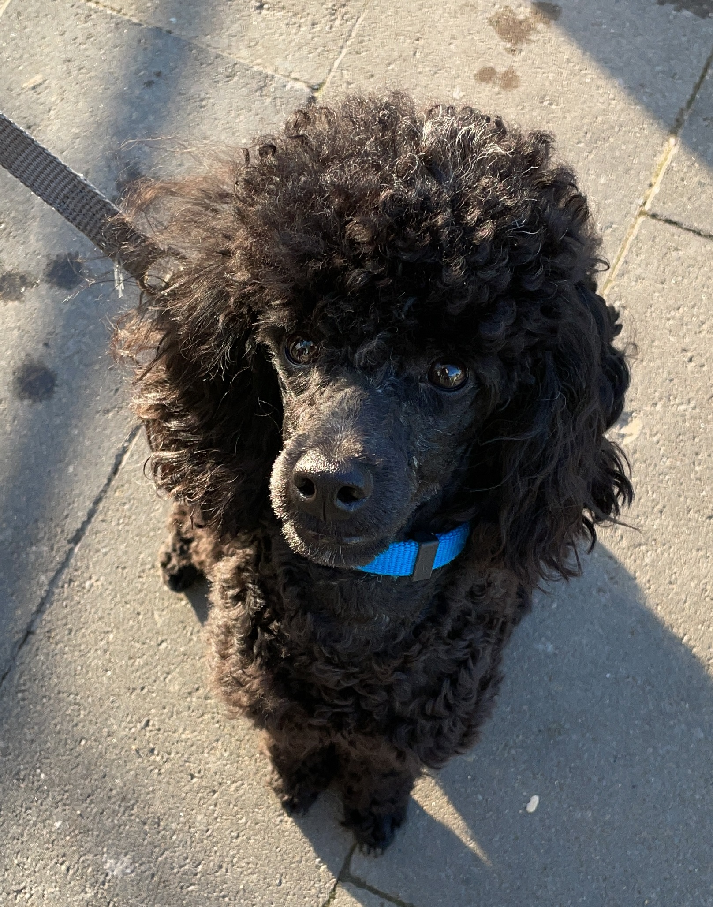

Лихт родился 29 апреля 2020 года.
Ещё задолго до его появления я придумала ему имя.
В 8 лет я услышала где-то, что с немецкого Light переводится как Свет.
И это событие совпало с тем, что я мечтала о чёрном карликовым пуделе.
И потом решила, что когда вырасту, куплю себе чёрного карликового пуделя
и назову его Лихтом. Не смотря на то, что он чёрный, внутри он "светлый".
Когда мне исполнилось 18 лет. мне разрешили купить собаку, как понимаете,
я его так и назвола.
Не смотря на то, что пудель считается охотничьей собакой, Лихт не обращает
внимания на птиц и грызунов.
Лихт очень не любит:
Лихт обожает:
Не сомтря на то, что пудели очень прихотливы в уходе, экономя деньги,
я научилась новым навыкам: